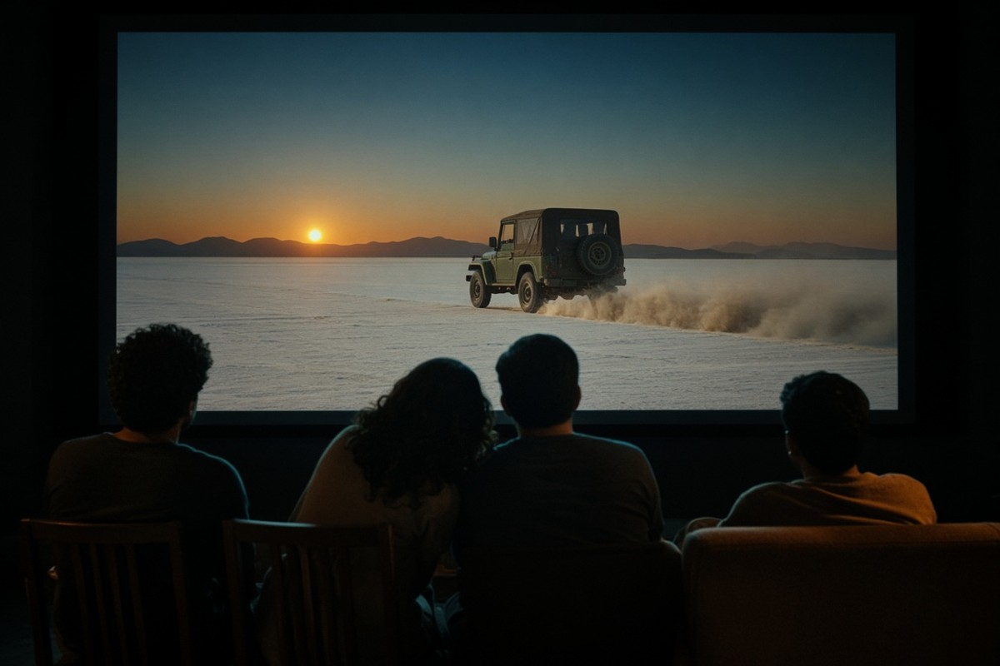

From first scene
to final delivery.
AI workflows for the problems between your first scene and final delivery. We make films, we teach the craft, and we are building V AI, starting with continuity: preparing what a film must hold, and reviewing shots from mixed tools and vendors against it, with the evidence shown.
Our films are released. V AI is a free prototype you can try today.
We write the song. Then we make the film.
Stay Standing
The first release. A song about staying upright when the reasons to have run out.
Prometheus
The myth of Prometheus, who stole fire from the gods and gave it to humanity, retold as a cinematic music video: the punishment returns every day, but the fire survives.
The Duel of Musashi & Kojiro
Two swordsmen. One shore. No dialogue. The most famous duel in Japanese history, told in three minutes and a score written for it.
Where are you with your film?


One cut, from many sources.
Shots from cameras, generators and vendors meet on one timeline. When a revised shot comes back, it is checked against what the film has already established before it goes in. Then you lock, grade and deliver every version.
Where V AI helpsV AI reviews returned shots, drafts notes for vendors and builds the delivery list.
I am editing a [length] film. Here is my scene list: [paste it]. Draft a delivery list for [platforms], and a checklist for reviewing shots that come back from vendors.
V AI is a free prototype: it drafts, a person decides. It opens in a new tab; paste the starter there.
Make a film. Or learn to.
Make a film with us
For artists, brands and producers: a music video, short or campaign made in-house, or a continuity review of a reel you already have.
Commissions open now. Continuity reviews run as pilots.

Learn to make films
For anyone who wants to make films, or bring the latest AI into their work: one to one, or as a group.
Sessions open now. The six-film programme is coming.

Gurudath Sadanandan.
Founder of Videogrammer. Writer, director, editor and colourist of the Videogrammer Studios films. He writes the songs under his artist name, NAMA. Before Videogrammer he taught as an assistant professor, and built Vanaprastham.org, a crowdfunded online community for Malayalam-speaking elders that ran live classes every day for four years.
- On Pexels: 210.5 million views of his stock photographs and videos (public profile, 10 November 2026)
- NAMA on YouTube: 17 music videos (10 November 2026)
Videogrammer Research measures how well AI holds a film together, and publishes the results, including the poor ones. Research →